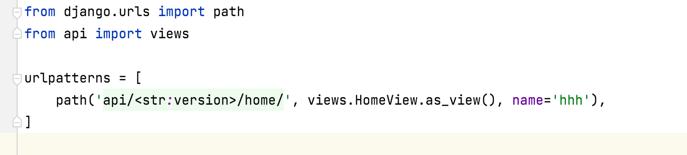
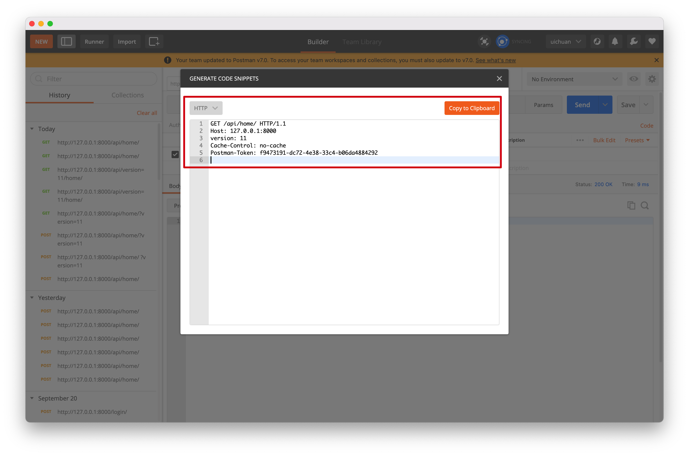

9.restframework版本控制
在请求中携带API的版本号，便于后续API的更新迭代
http://www.pythonav.com/api/v1.2/xx
http://www.pythonav.com/api/v1.5/xx
1.GET参数传递
在QueryParams中传递参数
# settings.py
REST_FRAMEWORK = {
"VERSION_PARAM": "v",
"DEFAULT_VERSION": "v1",
"ALLOWED_VERSIONS": ["v1", "v2", "v3"],
"DEFAULT_VERSIONING_CLASS":"rest_framework.versioning.QueryParameterVersioning"
}
在视图函数中
from rest_framework.views import APIView
from rest_framework.response import Response
from rest_framework.versioning import QueryParameterVersioning
class HomeView(APIView):
# 基于url中拼接参数的方式传递参数
versioning_class = QueryParameterVersioning
def get(self, request):
print(request.version)
# restframework中的反向生成本质上是django中的反向生成，可以添加版本参数
# 反向生成url http://127.0.0.1:8000/home/?version=111
# 携带:version=111
url = request.versioning_scheme.reverse('hhh', request=request)
print('反向生成url', url)
return Response("HomeView")
传入的数据被封装在request对象中
通过request.version读取

2. URL路径传递
在url.py中定义url时传入形参

from django.urls import path
from api import views
urlpatterns = [
path('api/<str:version>/home/', views.HomeView.as_view(), name='hhh'),
]
视图函数中
在versioning_class 中使用URLPathVersioning
class HomeView(APIView):
# 基于url中拼接参数的方式传递参数
versioning_class = URLPathVersioning
def get(self, request, *args, **kwargs):
# print(kwargs)
print('版本', kwargs['version'])
# request对象中包括了version信息
print(request.version)
url = request.versioning_scheme.reverse('hhh', request=request)
print('反向生成url', url)
return Response("HomeView")
在postman中测试时参数的位置要与urlpatterns中定义的格式保持一致
3. 请求头传递
在url.py中
from django.urls import path
from api import views
urlpatterns = [
path('api/home/', views.HomeView.as_view(), name='hhh'),
]
视图函数中versioning_class 设置为AcceptHeaderVersioning
from rest_framework.views import APIView
from rest_framework.response import Response
from rest_framework.versioning import AcceptHeaderVersioning
class HomeView(APIView):
# 在请求头中传递参数
versioning_class = AcceptHeaderVersioning
def get(self, request, *args, **kwargs):
print(request.version)
url = request.versioning_scheme.reverse('hhh', request=request)
print('反向生成url', url)
return Response("HomeView")
在postman中测试时参数写在请求头中


GET /api/home/ HTTP/1.1
Host: 127.0.0.1:8000
version: 11
Cache-Control: no-cache
Postman-Token: f9473191-dc72-4e38-33c4-b06da4884292
4. 反向生成url
url = request.versioning_scheme.reverse('hhh', request=request)
print('反向生成url', url)
这里的反向生成底层调用了django的reverse反向生成，
携带了版本信息的参数添加到反向生成的url中